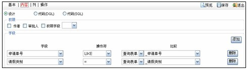

功能说明：
- 通过绑定表单获取数据，不需要任何的编程脚本便可完成，设计模式由权限和字段两部分组成，权限是对作者、审批人和权限字段的设置：
-
(1)如果设置为作者的话，视图的信息只能为作者本人所见；
- (2)如果设置为审批人的话，视图的信息只能为审批人或者作者本人所见；
-
权限字段（对应表单的权限部门字段）设有以下三个级别：
-
自身：只有本部门内部人员可查阅；
-
上级：本部门和上级部门人员可查阅；
-
下级：本部门和下级部门可查阅。
-
字段主要是对查询表单的查询条件进行设置。例如上面所举的例子，权限部分不进行设置，字段部分对“申请单号”和“请假类型”进行设置。“申请单号”的设置是“请假申请查询表单”的“申请单号”字段所获的值与“请假申请”的“申请单号”字段的比配。同理，“请假类型”的设置是“请假申请查询表单”的“请假类型”字段所获的值与“请假申请”的“请假类型”字段的比配。设计模式的界面如下图所示：
- 